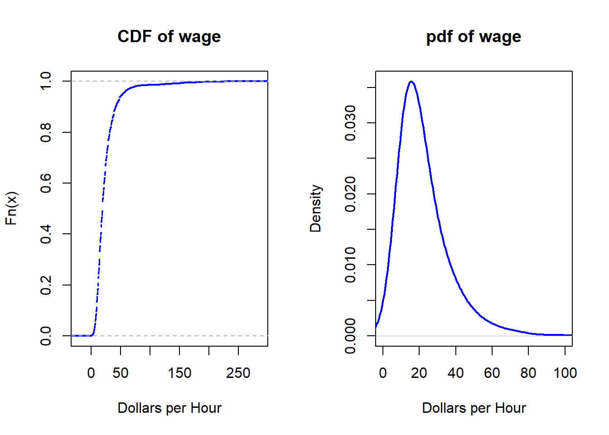
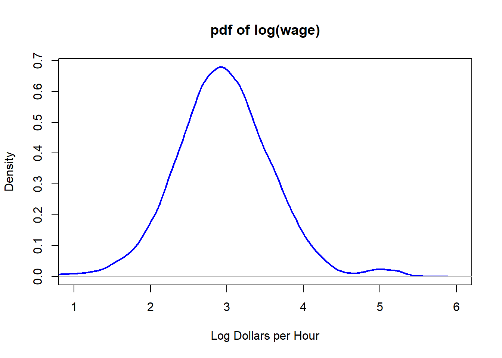
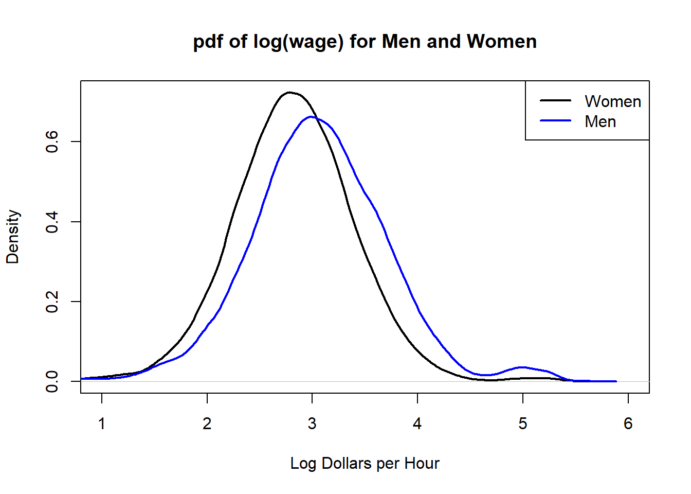
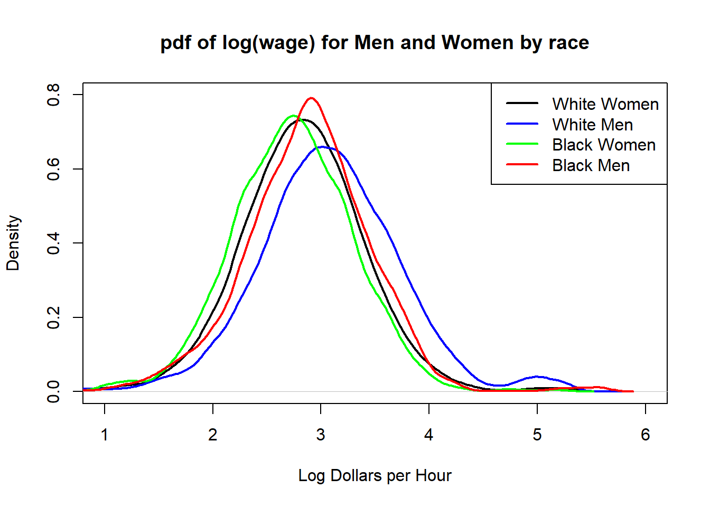

summary(cps09mar)#> age female hisp education earnings #> Min. :15.0 Min. :0.000 Min. :0.000 Min. : 0.0 Min. : 1 #> 1st Qu.:33.0 1st Qu.:0.000 1st Qu.:0.000 1st Qu.:12.0 1st Qu.: 28000 #> Median :42.0 Median :0.000 Median :0.000 Median :13.0 Median : 42000 #> Mean :42.1 Mean :0.426 Mean :0.149 Mean :13.9 Mean : 55092 #> 3rd Qu.:51.0 3rd Qu.:1.000 3rd Qu.:0.000 3rd Qu.:16.0 3rd Qu.: 65000 #> Max. :85.0 Max. :1.000 Max. :1.000 Max. :20.0 Max. :561087 #> hours week union uncov #> Min. :36.0 Min. :48.0 Min. :0.0000 Min. :0.00000 #> 1st Qu.:40.0 1st Qu.:52.0 1st Qu.:0.0000 1st Qu.:0.00000 #> Median :40.0 Median :52.0 Median :0.0000 Median :0.00000 #> Mean :43.8 Mean :51.9 Mean :0.0215 Mean :0.00221 #> 3rd Qu.:45.0 3rd Qu.:52.0 3rd Qu.:0.0000 3rd Qu.:0.00000 #> Max. :99.0 Max. :52.0 Max. :1.0000 Max. :1.00000 #> region race marital experience #> Min. :1.00 Min. : 1.00 Min. :1.00 Min. :-4.0 #> 1st Qu.:2.00 1st Qu.: 1.00 1st Qu.:1.00 1st Qu.:13.0 #> Median :3.00 Median : 1.00 Median :1.00 Median :22.0 #> Mean :2.64 Mean : 1.43 Mean :2.76 Mean :22.2 #> 3rd Qu.:4.00 3rd Qu.: 1.00 3rd Qu.:5.00 3rd Qu.:31.0 #> Max. :4.00 Max. :21.00 Max. :7.00 Max. :75.0 #> wage lwage #> Min. :3.80e-04 Min. :-7.86 #> 1st Qu.:1.28e+01 1st Qu.: 2.55 #> Median :1.92e+01 Median : 2.96 #> Mean :2.39e+01 Mean : 2.95 #> 3rd Qu.:2.88e+01 3rd Qu.: 3.36 #> Max. :2.66e+02 Max. : 5.58
1.3 Distribution of Hourly Wages
Code
# kernel density estimate of pdfwage.density =density(wage, bw=5)par(mfrow=c(1,2))# empirical cdfplot.ecdf(wage, main="CDF of wage", xlab="Dollars per Hour", lwd=2, col="blue")# estimate of pdfplot(wage.density, main="pdf of wage", xlim=c(0, 100), xlab="Dollars per Hour",lwd=2, col="blue")

1.4 Distribution of Hourly Log Wages
Code
lwage.density =density(lwage, bw=0.1)plot(lwage.density, main="pdf of log(wage)", xlab="Log Dollars per Hour", lwd=2, xlim =c(1, 6), col="blue")

1.5 Mean and Median Wages
Code
mean(wage)#> [1] 23.9median(wage)#> [1] 19.2
Code
plot(wage.density, main="pdf of wage", xlim=c(0, 100), xlab="Dollars per Hour",lwd=2, col="blue")abline(v=mean(wage), col="blue", lwd=2)abline(v=median(wage), col="red", lwd=2)legend("topright", legend=c("Mean", "Median"), lty=1, lwd=2, col=c("blue", "red"))
lwageWomen.density =density(lwage[female==1], bw=0.1)lwageMen.density =density(lwage[female==0], bw=0.1)plot(lwageWomen.density, main="pdf of log(wage) for Men and Women", xlab="Log Dollars per Hour", lwd=2, xlim =c(1, 6))points(lwageMen.density, type="l", col="blue", lwd=2)legend("topright", legend=c("Women", "Men"), lty="solid", lwd=2, col=c("black", "blue"))

Code
# mean log wages for men and womenmean(lwage[female==0])#> [1] 3.05mean(lwage[female==1])#> [1] 2.81# differencemean(lwage[female==0]) -mean(lwage[female==1])#> [1] 0.234
1.8 Conditional Distributions for Men and Women by race
Code
# race = 1 = white, race = 2 = blacklwageWhiteWomen.density =density(lwage[female==1& race==1], bw=0.1)lwageWhiteMen.density =density(lwage[female==0& race==1], bw=0.1)lwageBlackWomen.density =density(lwage[female==1& race==2], bw=0.1)lwageBlackMen.density =density(lwage[female==0& race==2], bw=0.1)plot(lwageWhiteWomen.density, main="pdf of log(wage) for Men and Women by race", xlab="Log Dollars per Hour", lwd=2, xlim =c(1, 6), ylim=c(0, 0.8))points(lwageWhiteMen.density, type="l", col="blue", lwd=2)points(lwageBlackWomen.density, type="l", col="green", lwd=2)points(lwageBlackMen.density, type="l", col="red", lwd=2)legend("topright", legend=c("White Women", "White Men", "Black Women", "Black Men"), lty="solid", lwd=2, col=c("black", "blue", "green", "red"))

1.9 Conditional Means for Men and Women by race
Code
# White malesmean(lwage[female==0& race==1])#> [1] 3.07# White femalesmean(lwage[female==1& race==1])#> [1] 2.82# Black malesmean(lwage[female==0& race==2])#> [1] 2.86# Black femalesmean(lwage[female==1& race==2])#> [1] 2.73
1.10 Conditional Mean Function
Compute conditional means of log wages for men and women conditional on education level